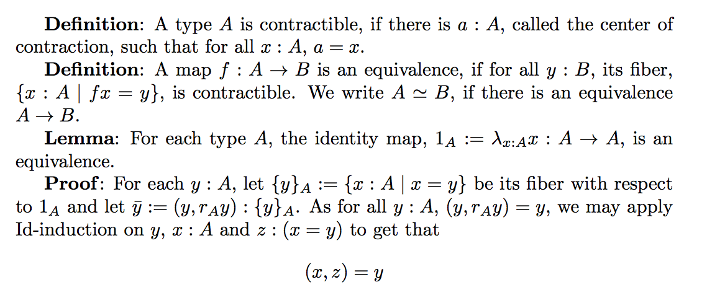

We have built a GF grammar (http://www.grammaticalframework.org) that parses an English text and converts it into type-theory-like formal notation. This is the start of a project for translating between natural language and formalized mathematics. The current grammar is still very rough and brittle.
22/10 Some refactoring; French added.
21/19/2014 First version.
To get the sources: https://github.com/GrammaticalFramework/gf-contrib/tree/master/homotopy-typetheory
ltestEng.pdf, a text whose source is recognizable and producible by the grammar. Follows a text by Peter Aczel almost verbatim. This text is very compact and dense, but follows the formal structure very closely.
ltestFre.pdf, the same in French, as translated by the grammar.
ltestEng.tex, the source of the English text.
ltestLogic.txt, the source translated to logical notation by GF.
ltestTrees.txt, the abstract syntax trees obtained by GF parsing.
macros.tex, some macros used in the text.
Framework.gf, abstract syntax for textual structures.
Formulas.gf, abstract syntax for material presented as LaTeX formulas.
HottLexicon.gf, abstract syntax for a homotopy type theory lexicon.
FrameworkFunctor.gf, concrete syntax functor for textual structures in natural language.
FrameworkInterface.gf, domain-specific interface for the functor.
FrameworkInstanceEng.gf, English instance of the domain-specific interface.
FrameworkInstanceFre.gf, French instance of the domain-specific interface.
FrameworkEng.gf, concrete syntax for textual structures in English, instantiating the functor.
FrameworkFre.gf, concrete syntax for textual structures in French, instantiating the functor.
FormulasLatex.gf, concrete syntax for LaTeX formulas to be embedded in English.
HottLexiconEng.gf, concrete syntax for a homotopy type theory lexicon in English.
HottLexiconFre.gf, concrete syntax for a homotopy type theory lexicon in English.
FrameworkLogic.gf, concrete syntax for textual structures in a type-theory-like formalism.
FormulasLogic.gf, concrete syntax for formulas in the formalism.
Make sure that you have recent enough a version of GF, 3.6.10-darcs Oct 21, 2014, or later. This is needed to get the correct lexing and unlexing behaviour for latex code.
-- start GF in a Unix shell
gf
-- import the top files
i HottLexiconLogic.gf
i HottLexiconEng.gf
i HottLexiconFre.gf
-- look at the lexed test file
rf -file=ltestEng.tex -lines | ps -lines -lexmixed
-- look at the parse trees
rf -file=ltestEng.tex -lines | ps -lines -lexmixed | p -lang=Eng
-- convert parse trees to logic
rf -file=ltestEng.tex -lines | ps -lines -lexmixed | p -lang=Eng | l -lang=Logic -unlexcode
-- translate English to French
rf -file=ltestEng.tex -lines | ps -lines -lexmixed | p -lang=Eng | l -lang=Fre -bind -unlexmixed
The translation takes 20 milliseconds on my early-2013 MacBook Pro. This means that we could translate a 500-page book in 10 seconds - or a bit more, if the pages are longer.
See comments in the GF files themselves.
See my CADE paper and this earlier LPAR paper for ideas on translating mathematics between type theory and natural language texts.
Most things. Here are some in a priority order:
GF = Logical Framework + concrete syntax.
GF was originally develop on top of the proof editor ALF. But non-mathematical applications have dominated since 1998. GF has libraries supporting over 30 languages, and the functor used in the current experiment could be readily instantiated in 29 of them: the ones that implement the full API of GF Resource Grammar Library.
The HoTT grammar should follow these best practices
Thanks to: Bas Spitters.
Contact: http://www.cse.chalmers.se/~aarne/